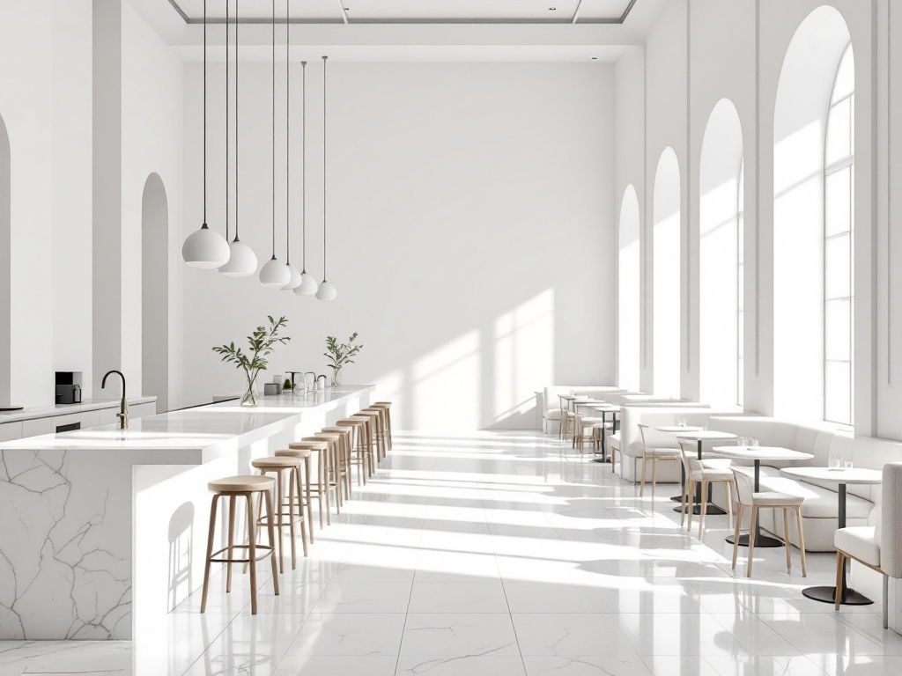
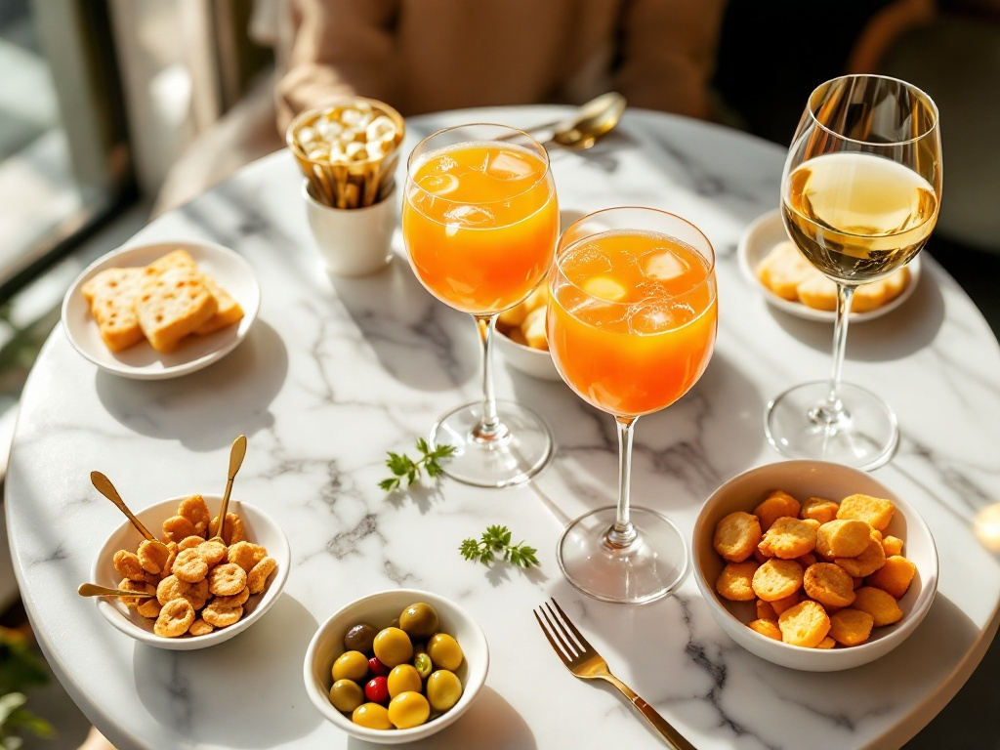
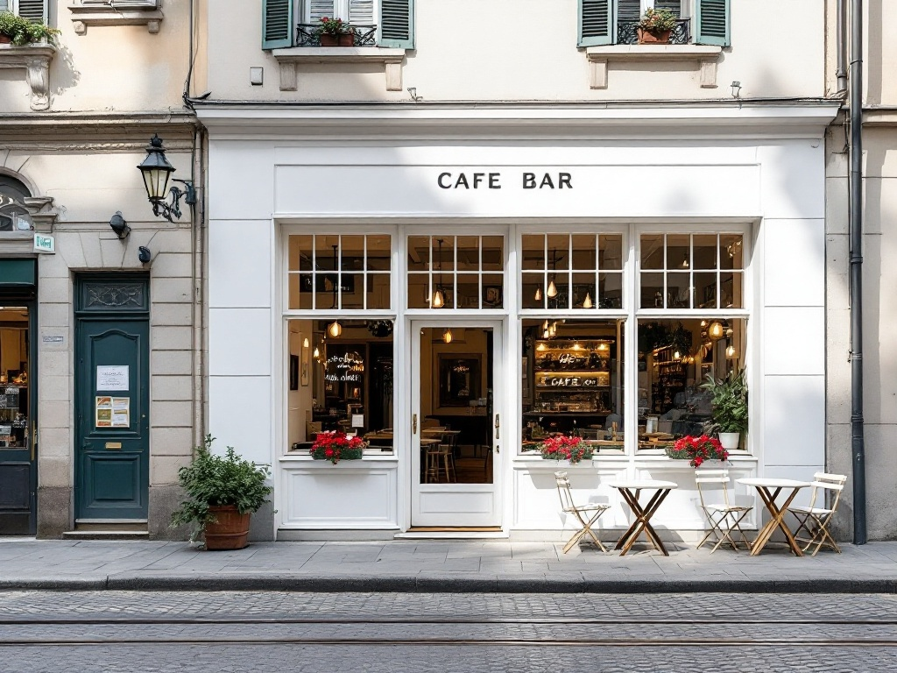
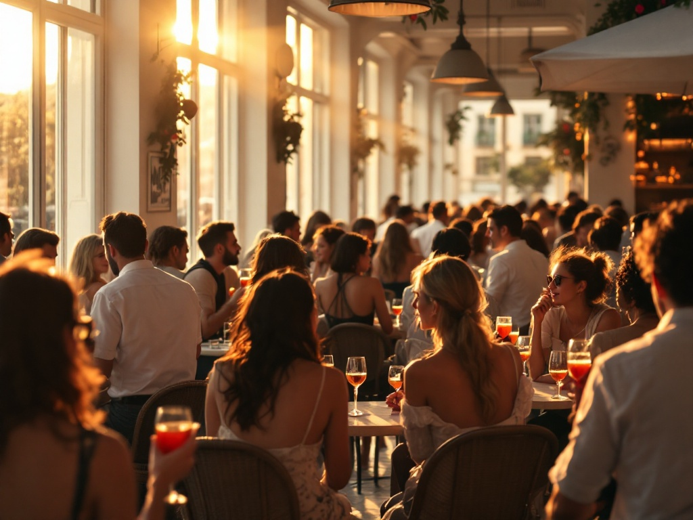
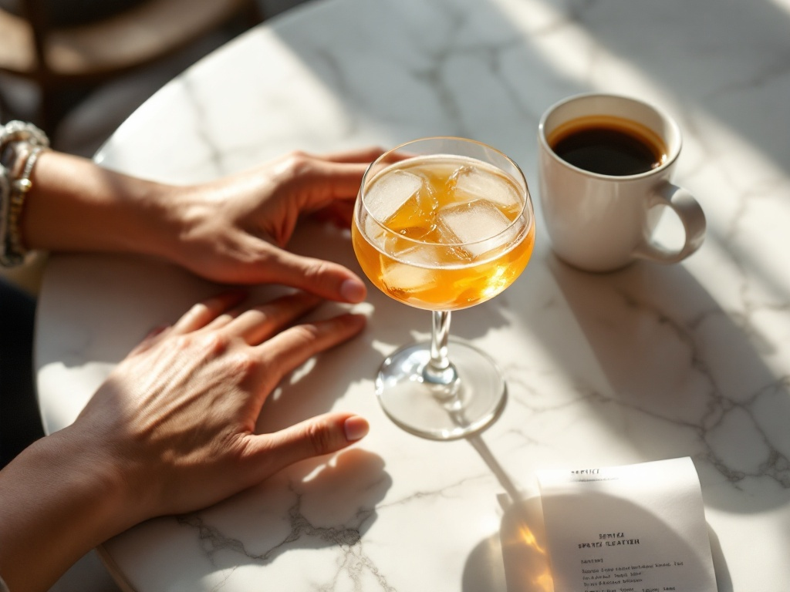

Una stanza tutta bianca a Milano, dove l'unico colore è nel bicchiere.
Dal primo espresso in piedi delle sette allo Spritz del golden hour. Una sola sala luminosa, un solo drink fatto bene.
Prima di essere un bar,
Blanco è un caffè.
Alle sette e mezza la macchina è già calda. Un espresso in piedi al bancone di marmo, due parole, e si riparte: è il rito che apre ogni giornata milanese.
Estraiamo su chicchi tostati per noi, con una crema densa e nocciolata servita nella tazzina bianca — la stessa che a mezzogiorno diventa un macchiato veloce e alle cinque un caffè freddo prima dell'aperitivo. Nessuna fila caotica: la sala bianca tiene il ritmo lento e ordinato di chi sa esattamente cosa ordinare.
Il primo espresso della giornata, sulla macchina cromata.
Quasi ogni bar di Milano è scuro. Blanco fa l'esatto opposto.
Ottone, legni scuri, luci basse: l'aperitivo milanese di solito è penombra. Qui le pareti sono di calce bianca, il pavimento in terrazzo chiaro, il bancone in marmo di Carrara. Il colore non è tolto per freddezza — è tolto per far spazio alla luce e a ciò che hai nel bicchiere.

Vetrate alte, marmo, rovere pallido e lino: una sola stanza architettonica che cambia carattere ora dopo ora, seguendo la luce di Milano dal mattino freddo al golden hour caldo.

Spritz, calici e piccola cucina sul marmo bianco.
Alle sei la stanza si accende d'ambra.
È il momento in cui i regolari tornano. Il sole basso entra dalle vetrate, lava di dorato le pareti bianche, e l'unico colore vivo diventa l'arancione dello Spritz in mano.
Ogni aperitivo arriva con la nostra piccola cucina del banco: olive, taralli, focaccia calda. Niente buffet, niente confusione — solo ciò che accompagna bene un drink fatto come si deve. Vieni in piedi al banco o prenota un tavolo per restare fino al tramonto.
Chi fa il drink è parte del drink.
In una sala così essenziale, il gesto conta. Dietro il marmo lavora un piccolo team che conosce i regolari per nome e costruisce ogni bicchiere con la stessa cura del primo espresso.
Al banco dei cocktail
Bar Manager
Costruisce i signature: mano ferma sul bar spoon, occhio all'equilibrio, e quella precisione svizzera che la sala bianca pretende. È da qui che nasce lo Spritz Blanco.
Al servizio del banco
Sala & Aperitivo
Versa, accoglie, tiene il ritmo dell'ora di punta senza mai alzare la voce. Il grembiule bianco, la bollicina che sale nel bicchiere: il golden hour passa dalle sue mani.
Dove siamo a Milano.

Milano
Angolo tranquillo di quartiere, tavolini sul marciapiede, binari del tram a due passi.
Orari indicativi a scopo dimostrativo, da confermare con il locale.
Al golden hour, la stanza è viva.

Com'è la prima volta da Blanco.
Devo prenotare o posso venire al banco?
Il banco è sempre libero: entra, ordina un espresso o uno Spritz e resta in piedi come fanno i milanesi. Se invece vuoi un tavolo — soprattutto all'ora dell'aperitivo — meglio chiamare prima, così ti teniamo il posto migliore nella sala.
A che ora è l'aperitivo?
La sala si accende d'ambra dalle 18:00. È il momento più pieno e più bello, quando il sole basso lava di dorato le pareti bianche. Arriva verso le 18:30 se cerchi un tavolo con calma, o più tardi se ti va l'energia dell'ora di punta.
Posso prenotare per un gruppo?
Sì. Per gruppi e piccole occasioni chiamaci al 393 880 1520: organizziamo lo spazio e la piccola cucina del banco in base a quante persone siete.
Che tipo di posto è, esattamente?
Un caffè-bar tutto bianco: la mattina un caffè da rito veloce, il pomeriggio una pausa luminosa, la sera l'aperitivo. Una sola stanza architettonica dove l'unico colore vivo è quello che hai nel bicchiere.
C'è qualcosa senza alcol?
Certo. Facciamo analcolici d'autore costruiti con la stessa cura dei cocktail — agrumi, tonica e botaniche — perché lo Spritz sia una scelta, non un obbligo.
Tieniti un posto nella sala bianca.
Un tavolo per l'aperitivo, un caffè al banco domani mattina, o una serata per il tuo gruppo. Bastano due minuti al telefono.

Preferisci scrivere? Puoi contattarci per messaggio o e-mail per informazioni e prenotazioni di gruppo — indicaci giorno, orario e numero di persone e ti confermiamo il tavolo.
393 880 1520
Prenota chiamando
Rispondiamo dal banco negli orari di apertura. Chiama per un tavolo, un gruppo o solo per sapere se c'è posto ora.
393 880 1520